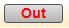
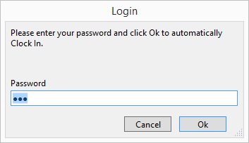
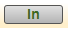
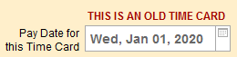
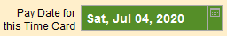
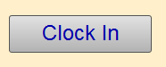
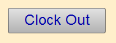
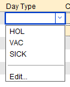
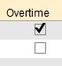

Clock In Clock Out
The Easy Way to Clock In/Out
-
On the Main Menum, click the Time Cards icon.

-
In the In/Out column, click the button to the right of your name.

-
The Login/Logout dialog appears.

-
Enter your password and click OK.
-
The button text changes to reflect the current status, i.e. In or Out.

The date and time of this action is entered on your current Time Card.
FrameReady immediately logs out the user and is ready for the next employee.
The Detailed Way
Tip: Using these steps allows you to see your Time Card and details.
-
On the Main Menum, click the Time Cards icon.
-
In the Employee ID column, click the grey button to the left of your name.
-
Enter your password when prompted.
The screen changes to a form view of your current Time Card. -
From there, observe the current Status (e.g. Clocked Out) as well as the Pay Date. A Pay Date that is older than today's current date displays a notice to the user:

If the Pay Date is in the future, then it appears to users in green:

-
Click the Clock In / Clock Out toggle button.

OR

-
Click the red Logout button (top right).

Notes for Employees with User Access
Employees with User access can view their own Time Cards. (The Find screen has been modified so that a user level account can only do a find for their Time Cards.)
-
Click the Clock In/Clock Out button.
OR

A new line item entry is created; the current date and time is automatically recorded on the Time Card.
If you have not yet clocked in for the current day, then you are automatically clocked in. Alternately, if you have not yet clocked out, then you are automatically clocked out. -
Click in the Day Type drop-down list to select a day type if the entry is a holiday, vacation day etc.

-
Check the Overtime box if the line item entry is Overtime hours.

This overrides the default Overtime settings. Overtime will be calculated based on the checked line entries and not the total number of hours worked. -
Click the red Logout button.
© 2023 Adatasol, Inc.